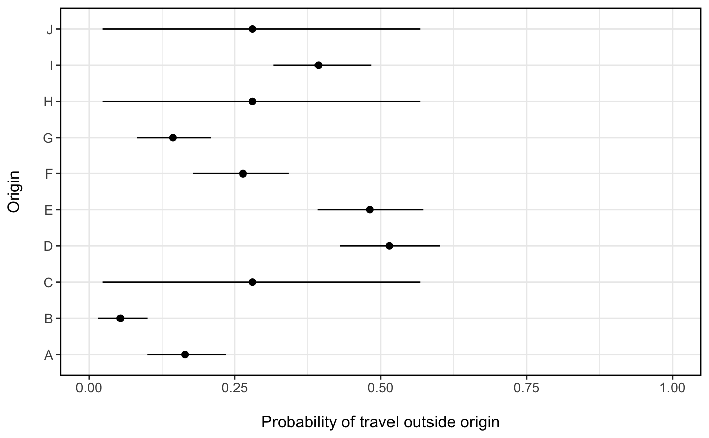

summarize_mobility.RdThis is a wrapper function of MCMCsummary that calculates summary statistics for each
parameter in a mcmc.list object. Summary statistics are calculated for all parameters across
each chain along with convergance diagnosics like the Gelman-Rubin convergence diagnostic and (Rhat) and samples
auto-correlation foreach parameter. If the model object contains deviance and penalty parameters, then Deviance Information
Criterion (DIC) is calculated and appended to the summary.
summarize_mobility(mod, ac_lags = c(2, 5, 10))
| mod | an mcmc.list object |
|---|---|
| ac_lags | vector of lags over which to calculate autocorrelation of samples within chains (default = c(2,5,10)) |
a dataframe with summary statistics
Other model:
check_mobility(),
fit_gravity(),
fit_jags(),
fit_mobility(),
fit_prob_travel()
# Gravity model M <- mobility_matrices$M D <- mobility_matrices$D N <- mobility_matrices$N mod <- fit_gravity(M, D, N, DIC=TRUE)#>#>#> Compiling model graph #> Resolving undeclared variables #> Allocating nodes #> Graph information: #> Observed stochastic nodes: 74 #> Unobserved stochastic nodes: 30 #> Total graph size: 1166 #> #> Initializing model #> #> NOTE: Stopping adaptation #> #>summarize_mobility(mod)#> Mean SD HPD2.5 HPD97.5 Rhat SSeff AC2 #> gamma 1.410513 0.0166879 1.376357e+00 1.442549 1.00 350 0.6550661 #> omega_1 1.947173 1.8729922 1.227391e-03 5.941264 1.01 468 0.5957435 #> omega_2 39.776036 2.1302478 3.542959e+01 43.938256 1.01 369 0.6603387 #> theta 1.909631 1.8836368 1.565660e-03 5.954549 1.01 446 0.6765402 #> DIC 48211.830636 2.9682141 4.820883e+04 48218.096231 1.02 369 0.5793665 #> deviance 48189.093194 2.9682141 4.818609e+04 48195.358789 1.02 369 0.5793665 #> pD 11.368721 NA NA NA NA NA NA #> AC5 AC10 #> gamma 0.2534136 0.073750061 #> omega_1 0.1800260 0.030696760 #> omega_2 0.2396745 0.086905300 #> theta 0.1771725 0.007273177 #> DIC 0.2042307 0.073822509 #> deviance 0.2042307 0.073822509 #> pD NA NA# Probability of travel n_orig <- 10 n_missing <- 3 orig_id <- LETTERS[1:n_orig] N <- rpois(n_orig, 100) # population size of each origin p <- rbeta(n_orig, 1, 2) # probability of leaving origin travel <- setNames(rbinom(n_orig, N, p), orig_id) total <- setNames(N, orig_id) miss <- sample(1:n_orig, n_missing) # missing observations travel[miss] <- total[miss] <- NA # Estimate probability of travel for each locations (missing locations regress to mean) prob_trav <- summarize_mobility( fit_prob_travel(travel=travel, total=total) )#>#>#> Compiling model graph #> Resolving undeclared variables #> Allocating nodes #> Graph information: #> Observed stochastic nodes: 7 #> Unobserved stochastic nodes: 10 #> Total graph size: 26 #> #> Initializing model #> #> NOTE: Stopping adaptation #> #>library(ggplot2) ggplot(data=prob_trav) + geom_point(aes(x=Mean, y=orig_id), size=2) + ggstance::geom_linerangeh(aes(y=orig_id, xmin=HPD2.5, xmax=HPD97.5)) + xlab('Probability of travel outside origin') + ylab('Origin') + xlim(0,1) + theme_bw() + theme(axis.text.x=element_text(size=10), axis.text.y=element_text(size=10), axis.title.x=element_text(size=12, margin = margin(t = 15)), axis.title.y=element_text(size=12, margin = margin(r = 15)), panel.border = element_rect(colour = "black", fill=NA, size=1), legend.position='right')